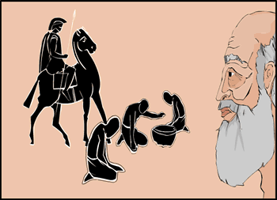

|

"Sparta has not always been about only soldiers and war" , Dieneces' grandfather said to the boy at his side. "From early times, Sparta has had its own slave population, who we call Helots. These people have farmed the land and provided some of the food they grow for their Spartan overlords. As Sparta developed, it wanted more land. The land of Messenia, over the mountains, was a very fertile place and Sparta determined to conquer it and force these people also into slavery on the land. | |
| ...previous | next... |